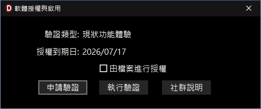

軟體授權與啟用
本功能用於查看 InfoRec 目前的試用或註冊狀態，以及申請、完成免費註冊。註冊條件與完整流程請見免費註冊說明。
狀態資訊
- 「驗證類型」：顯示目前是試用、已註冊或社群版。
- 「授權到期日」：試用或註冊的到期日。到期後以社群版繼續使用，已有的文件設定檔都可正常作業；匯入套印、網路下載文件設定檔與軟體更新需完成註冊或續約。
按鈕說明
-
申請驗證
- 開啟 申請註冊 視窗，可查看使用進度、送出免費註冊或續約申請，以及變更綁定的硬體。
-
執行驗證
- 「執行驗證」：在註冊網頁完成簽名、或我們代辦完成後按下，系統從雲端取得註冊結果；完成後重新啟動 InfoRec。
- 「由檔案進行授權」：電腦無法上網時，勾選此項再按「執行驗證」，選取我們寄回的授權檔
OK_Reg_*.txt。
- 「社群說明」：開啟說明與協助資訊。

軟體授權與啟用視窗